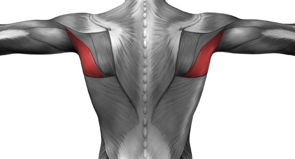
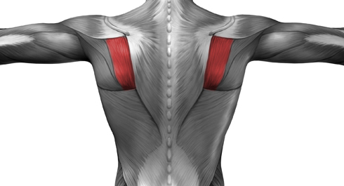
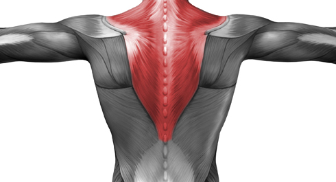

Our ADVANCED block begins with the analysis of all the exercises used in this program. This time we will be looking at them from a slightly different angle. Now our focus will be on the muscles work and different variations of an exercise and how to engage different muscle groups.
Actually there are only two things you need to know which were missing from the previous post on pull-ups during the BASIC block.
Grips and Dimensions
Everyone knows that there are many grip variations; and for a better effect, you should balance different grip positions.
Let’s define specific grips and exercises where you should use them. Can you visualize your backbone for a moment, ok? The narrower your grip is, i.e. the closer your hands are toward the spine, the better you work muscles close to the spine. The wider your grip is, the better you work muscles farther from the spine. Generally speaking, with alternating the width of grip, you can shift the load focus from one muscle to another thus working out all spine muscles!
For clarity, check out the pictures below with the muscles highlighted:

Lats

Teres major
Teres minor

Infraspinatus

Traps (Rhomboids located underneath)
You should note that the broadest muscle of back – the lats – is like one whole, if we can put it that way. Unlike three parts of the pectoral muscle, or three parts of the extensor muscle of the arms, or two parts of the flexor muscle of the arms (biceps), the lats is ONE muscle. Therefore, if you change the width of grip, you cannot target different areas of the lats! But when you change the grip, you shift the focus from the lats to other muscles involving them into work, etc.
Over and above, the Internet has it, vertical pulls make your back broader, while horizontal pulls (eg Australian Pull-Ups or Horizontal Pulls) make your back thicker. Well, even though we’ve discussed it on the margins when posted on popular workout myths, we would like to remind you of the two things the muscles are only capable of: pumping or shrinking. Consistently, at that. You can’t make it broader without making it thicker.
We’d say that different grips and pulls are mostly important for shoulder joints. When you do horizontal pulls, you naturally hold with a pronated or overhand grip, while a neutral or parallel grip is best for vertical pulls. But remember that changing grip position helps to lessen the load for the joints (targeted muscles do work all the time while antagonists can be employed a bit differently).
FYI
Antagonistic muscles are muscles or muscle groups that oppose the action of others. Like say during an exercise, while your back muscles are performing a pulling movement, your chest muscles are performing a pushing/pressing movement. It occurs within one anatomical movement with the only difference in changing the body position and unchanged force vector.
You should train with the most comfortable and natural grips. If you cannot perform pull-ups behind the neck for some reasons, there’s no point sweating it up.
Another detail is in how thick a pull-up bar is. Thicker bars make it harder to grip onto (though prevent calluses) and more tiresome for your forearms. Which can be both good and bad. Good because regular pull-ops on thick bars will work out a hell of your forearms and grips; bad because your forearms will be fatigued faster than your back meaning that thick bars are poor at targeting your back muscles (they just won’t get the load sufficient for growth).
Quality vs. Quantity
It's one thing if you want to increase the number of repeats. Then you should train to increase quantity. And it's another one if you want to make your muscles bigger which means your workout should be planned respectively. The difference is in that the first case would require minimum efforts for each rep (to spare them for as many reps as possible); while it would take giving it all in the second one. In the first case, you should set yourself up on the optimal technique, while in the second one, you should feel how your muscles work.
That's all for today!